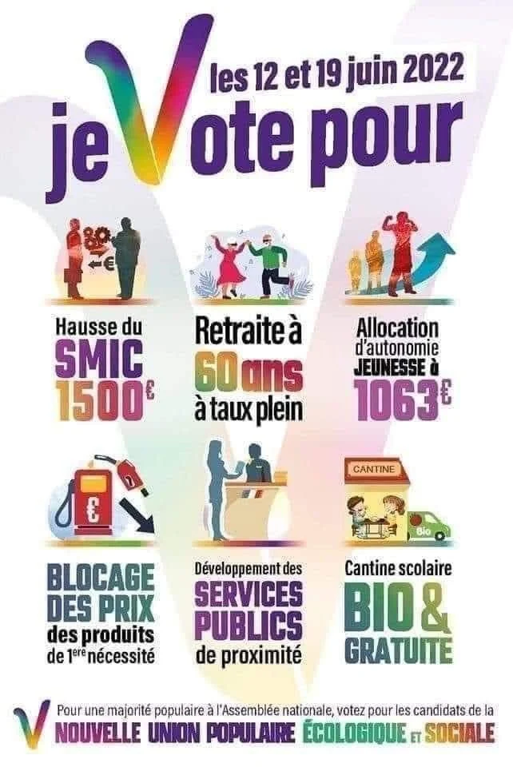

Publication d’archives
Pour une société qui promeut plus d'action publique, plus d'égalité, plus de solidarité, dimanche 19 juin, on…
Date indiquée par Facebook · 17 juin 2022
Texte conservé avec la publication
Contexte du dossier
Le 14 juin, la fédération remercie les électeurs communistes ayant soutenu les candidatures NUPES dans les trois circonscriptions. Elle se félicite des résultats du premier tour et appelle à poursuivre l’effort. Surtout, elle annonce que les réformes devront être portées, dès le lendemain du scrutin, par une mobilisation sociale : le bulletin ne dispense pas de la lutte.
Le long appel du 17 juin, et son rappel plus bref, opposent deux choix de société : action publique, égalité et solidarité, ou poursuite des politiques dénoncées. Hausse du SMIC et des pensions, protection des prix, services publics, allocation d’autonomie et retraite à 60 ans y sont formulés comme engagements d’une majorité à conquérir. L’adresse vise particulièrement les abstentionnistes. Le temps verbal compte : ce programme appartient au possible défendu pendant la campagne, sans se confondre avec les décisions prises après elle.

Sources
Archive rouge · export Facebook · AR-0002-FB-01874
À lire aussi · Septembre 2022 : le débat public ne se décrète pas d’en haut